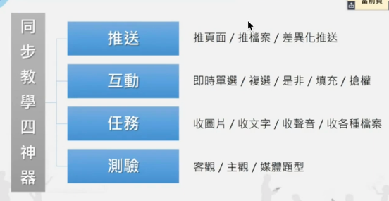
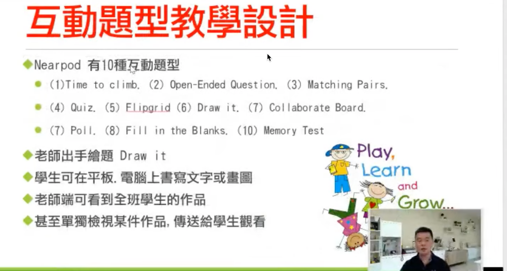
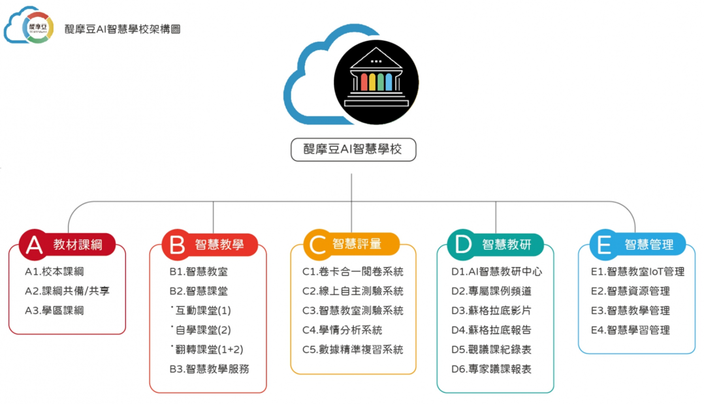
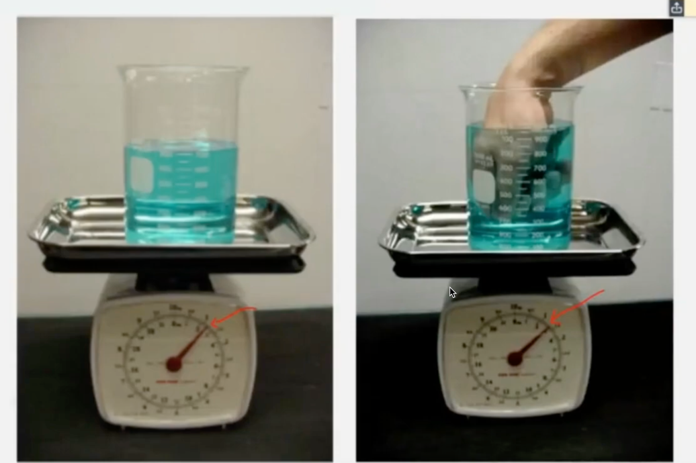
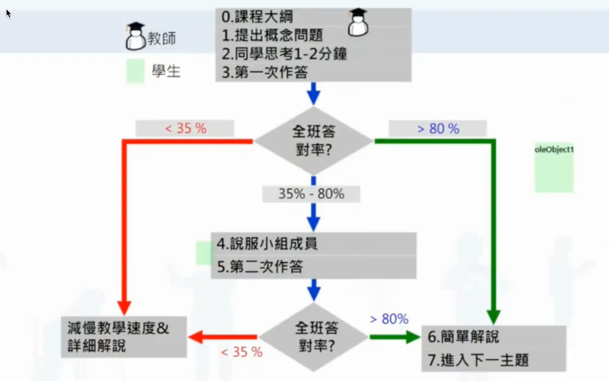
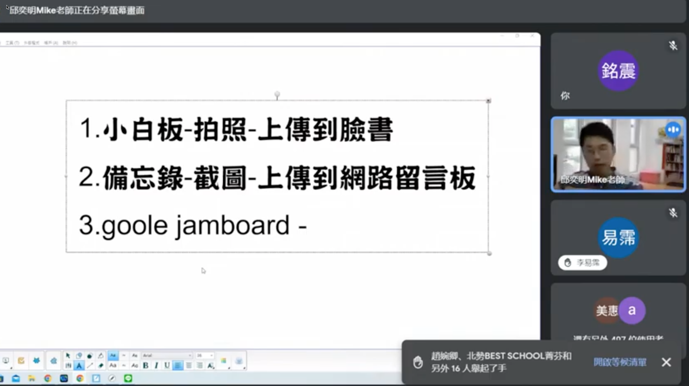
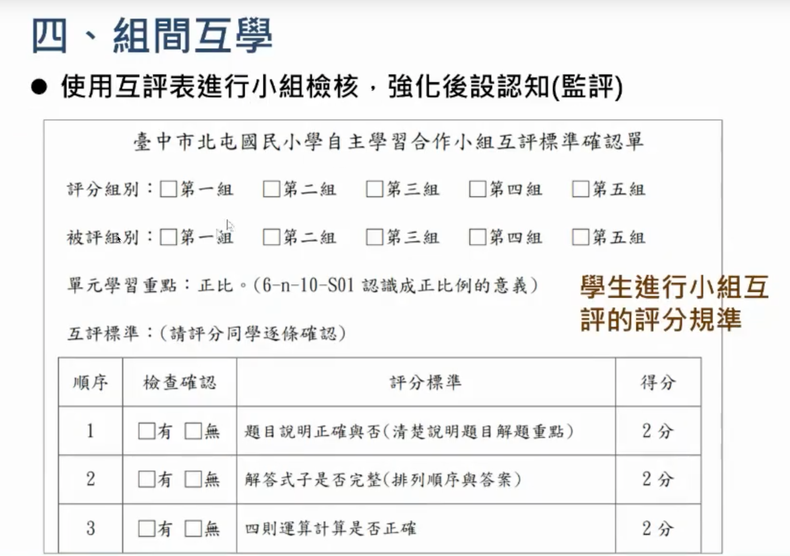

科技力支持自主學習
Table of Contents
- 1. 情境
- 2. 目標：自主學習
- 3. 自主學習公開觀課
- 4. 背景
- 5. 得奬作品DEMO
- 6. 為什麼自主學習需要訓練
- 7. 自主學習的成功案例
- 8. WHY: 為什麼需要自主竹孚習
- 9. WHAT: 自主學習的類型(理論與策略): SRL v.s. SDL
- 10. 學生會遇到的問題
- 11. HOW: 教法
- 12. 資訊領域教師的優勢
- 13. Resources: 科技力輔助自主學習資源：工具/網站/平台
- 14. 自主學習沒告訴你的事
- 15. 電腦教師
- 16. 數位學習教師增能培訓(這也是自主學習)
- 17. 素養導向教學關鍵要素
- 18. 教學影片的觀點
- 19. 學習者調到困難要如何尋求幫助(調節)
- 20. 自主學習需要的能力(四個關鍵階段)
- 21. 混合式教學
- 22. 工具
- 23. 生生用平板
- 24. 學習單範例
- 25. 課堂上如何進行SRL、CoRL與SSRL?
- 26. PBL: Project-based learning
- 27. 教師的憂慮
- 28. 復興高中的做法
- 29. 翻轉教育
- 30. 自主學習的策略與方法
- 31. 彰化縣原斗國中小教師 林怡辰
- 32. 新課綱：真實的情境與真實的問題
- 33. 自主學習的隱憂
- 34. 習得無助感
- 35. 北京共識——人工智慧與教育
- 36. 回饋單
HandsOn Unsupervised Learning Using Python
我是為了講自主學習才自主學習有關自主學習的知識的。
教育是陪伴學習者的過程，首先不要擋路，其次
1. 情境
接下來的情境假定: 生生有平板、電腦教室
2. 目標：自主學習
2.1. 定義：
Figure 1: Caption
Figure 2: Caption
Figure 3: Caption
- 以往(108課綱)的自主學習應用場域是彈性學習時段，學生有高度自主性，希望有類以「學習歷程檔案」之類的學習成果
- 此波科技輔助自主學習應用場或是希望發生在部定/校定必修或選修，
2.2. Self-Regulated Learning
Figure 4: Caption
2.3. 具體可評估
2.4. 希望達到的成果
2.5. 如何設計課程內容
2.6. 科技如何促進自主學習的
2.6.1. 科技做為工具
2.6.2. 科技做為資料來源
2.6.3. 科技做為合作溝通媒介
2.6.4. 科技做為評量工具
2.6.5. 如何整合各領域
3. 自主學習公開觀課
4. 背景
4.1. 現況
- COVID-19（新冠肺炎或武漢肺炎）疫情延燒全球，為了防疫，全面影響人類生活、工作與學習。面對史無前例的15億學生停課潮，全球教育組織和領袖都站出來。
OECD教育和技能主席、PISA（國際學生能力評比）負責人安德列・史萊賀認為這次停學挑戰，就是一種教育界的「破壞式創新」，即使疫情過去，整個教育界也將轉變，「再也回不去了」。
4.1.1. 學生還到的困難(2020)
為了解108課綱自主學習現況，親子天下抽樣邀請全國高一生及老師們進行全台首次108課綱高一生自主學習調查，調查結果三大發現1：

Figure 5: Caption
- 發現一、自主學習方向多與升學相關
有75%的高一生(表1)在高一期間已經提出並執行自主學習，其中六都私校生提自主學習比率最高83%，最低是非六都公校僅64%，在提出自主學習計畫的學生中，有高達64%的學生表示「非常喜歡」及「有點喜歡」(表2)這樣的自主學習模式。
課綱中雖然未規定自主學習需和未來升學方向結合，但調查結果顯示，自主學習的範圍方向有近4成和升學或學科能力直接相關(表3)，如「擬讀科系相關主題」(21%)及「學科科目加強」(18%)，僅29%會選擇「自己課外興趣(含才藝)」。交叉分析不同類型學校學生結果，公校生選「以自己課外興趣」為自主學習主題方向者有35%，私校生僅有19%
不少高一生反映「希望可以自主，盡量不要規範學生學習的領域」、「建議真正落實自主學習所說的自由，不應是學校認為沒成果，就停止學生自主性的活動。」顯示不少學校對於學習的方向仍有限制。

Figure 6: Caption
Figure 7: Caption
- 發現二、學生對自主學習的目標不明確
調查發現，高一生在提出自主學習規畫時，超過半數(表4)認為最大的困難是「自主學習要達到的目標不明確」(55%)，其次是「還不確定未來想就讀科系不知如何對應」(44%)，其中城鄉間也存在著差異：29%的非六都學生表示不知道如何找資源，但僅21%的六都生表示表示困難。在計畫實際執行時的挑戰，47%的學生(表5)認為「計劃太理想，執行有困難」，44%認為「自主學習時間不夠」。不過從老師觀點觀察自主學習的最大挑戰，則是「自律不足，忍不住滑手機」(53%)。
私校生在執行自主學習計畫時(表5)，認為「自主學習時間不夠」比率(52%)遠高於公校生(39%)。淡江大學教育政策與領導研究所所長薛曉華針對此建議，「要有一些空間讓高一的學生先去處理過去國中階段被填滿的狀態，要先讓他們有一些自我探索的空間。」
Figure 8: Caption
Figure 9: Caption
- 發現三、高中第一年的探索仍不足夠
「自主學習」的設計原本是為了給學生更多探索機會，但是調查發現過去曾自主學習的高一生，仍有約7成(表6)表示不確定未來大學擬申請的科系方向。超過半數高中老師認為(表7)，透過自主學習可以幫助學生「探索自我」、「學會自學能力」，但是非六都的老師對此較不具信心，不到五成認為自主學習對「學生探索自我」、「學會自學能力」有幫助。
Figure 10: Caption
台灣大學副教務長詹魁元認為，探索本來就來來回回，若看太細，學生反而會緊張，高中生活不只是為了升大學，還包含自己未來生涯方向。台北市復興高中校長劉桂光表示，從失敗經驗中學習，改善自己的自主學習計畫，這就是自主學習的目的，當學生學會這些能力素養的培養，之後就更有機會成為終身學習者。
4.2. 前瞻基礎建設計劃的數位學習目標
班班有平板/生生有平板
4.3. 以前的數位學習
強調教師使用科技/載具/軟體/內容/平台
4.4. 現在的數位學習
讓學生在課堂使用科技/載具/軟體/內容/平台
4.5. 傳統教育的問題
4.5.1. 教和學何者更重要
4.5.2. 劃分學科知識碎片化
- 紐約大樓電梯等待時間過長問題：租客抱怨若未能改善就要搬走，如何解決？改善電梯效能：如增設電梯、更換更快的電梯，這些都受限大樓結構限制無法實施。最後一位心理系的學生認為電梯等待時間不可能太久，住戶只是太無聊，所以他建議在電梯中多安裝幾面鏡子，讓乘客打發時間，觀察自己或他人，現在多數電梯都會安裝鏡子。這個問是哪一個領域？現在有些電梯還有廣告推播
- 傳統教育的知識都是碎片化，被分為各個領域，由不同教師教授、不同考核方式 。但實際上知識間有很大的關聯性。學科的化分是人為強制知識本身並沒有分科問題，之所以被分科是因為被學校教師硬分拆出來
4.5.3. 考試無法衡量工作能力
- 以氣壓計量大樓高度
- 考試技巧: 選最長的選項、選C
4.5.4. 以能力為主的教學(v.s. 素養)
以能力主的教學學到的是舊知識、舊能力 學習素養為培養學習能力的手段、是培養學生學習的能力(Learn how to learn)
5. 得奬作品DEMO
5.1. 學習平台應用
仁和國小
屏北高中
6. 為什麼自主學習需要訓練
Figure 11: Caption
- MENTI有文字雲?
7. 自主學習的成功案例
7.1. 我的未來, 自己寫: 17歲資奧金牌少年, 衝撞體制500天
「我很困惑，為什麼一定要有成果才能開始支持我？ 所有人都很願意在我把一變成二的路上伸出援手， 但是我從零變成一的過程才是最需要支持的啊！」
Figure 12: Caption
7.1.1. 簡介
- 身分：新竹實驗高中畢業、美國麻省理工學院學生
- 經歷：2016年代表台灣參加國際資訊奧林匹亞競賽獲得金牌（IOI）
如何規畫拚資奧：國際資奧命題大綱在2015年時有134項，何達睿評估自己熟練的有27項。他先隨意挑出其中一個，發現熟悉一個項目大約需要15小時，也就是說，距離國手選拔50星期要熟悉107項，平均每星期要花32小時。這樣分析後，讓夢想從很遙遠的目標，變成有概念、具體可以實踐。 從就讀新竹實驗高中高一時立志「拿下資訊奧林匹亞競賽金牌」，何達睿就用盡全力朝目標狂奔。2016年代表台灣參加國際資訊奧林匹亞競賽，獲得金牌，目前如願進入美國麻省理工學院（MIT）就讀。
他從國小四年級第一次接觸Scratch（MIT發明的程式語言）開始，就嶄露出天分；國中準備了3個半月，拿下網際網路程式全國設計大賽（NPSC）第一名。進入高中，信心滿滿參加資奧國手選拔，卻連第二階段都沒有晉級，被擋在夢想的門外。 想被選上國手、拿下金牌，必須投入百分之百的心力準備，很難同時顧及課業，準備大學考試。但何達睿評估過，奧林匹亞競賽的保障入學制度，對進入台灣的公立大學有一定把握，最後決定孤注一擲拚資奧。
然而，儘管覺得自己連退路都想清楚了，但這個遠離傳統升學道路的決定，並沒有得到身邊人的支持，老師和父母仍然希望他「以課業為本分」。
何達睿相當難過，不懂為什麼自己勇敢選擇一個夢想，不但沒受到支持，還要被阻撓？他不斷說服爸媽和老師，他還記得，自己讓媽媽不再反對的最後一句話是：「這場仗賭的是我的一年，我都不在意，你們在意什麼？到底是你們大人輸不起，還是我輸不起？」
而同學們，雖然不會是反對的那一群，但當他把目標放在資奧後，和同學相處就變少了，交集也愈來愈少。
「那種感覺就像是，同儕、師長對我投以迷途羔羊的眼光，在邁向資奧的入口處，看著我獨自走上這條路。」何達睿明白，只要退讓一點點，都可能讓夢想落空。
但「金牌」是個很遙遠的目標，要從何著手？何達睿認為得先估算自己離金牌多遠，才會知道如何具體往前邁進。
第一次選訓營的止步，讓何達睿意識到自己的「弱」。他戒慎恐懼，用最嚴格的標準鞭策自己，每週花上28～40小時，只要螢幕離開寫程式介面5分鐘，恐懼感就會油然而生，連1分鐘犧牲寫程式的時間都不敢。
Ｑ：大多數人對「資優生」的印象都停留在：一路保送不用煩惱升學和教育體制，所以讀了你的故事都很意外，很難想像資優生竟然也為體制所苦，你花了500天衝撞體制，是否可以談談這所謂「500天」你的界定，以及你覺得最難熬的是？
何達睿：我界定它的方式是從「下定決心開始追夢」到「夢想成真」的天數。前者發生在2015年三月底從資奧選訓營落選後，後者發生在2016年年八月中下旬，掐指一算確實「500天」。我覺得最難熬的絕對是最一開始的時候，我什麼成果都還沒做出來，卻還是要說服眾人和自己，大把大把的投資時間精力到資訊領域，不被支持，卻又知道在此放棄的話，自己一點勝算也沒有，只能咬牙撐下去。 比賽前，連怎麼進食都沙推
他先利用一個暑假，全力衝刺免修門檻，開學後每週請 2 天事假，然後訂下 100 天為 1 期的計畫表，規畫 500 天內各階段的目標，「我每一分鐘寫程式的時間都不敢犧牲……，只要螢幕離開寫程式的介面 5 分鐘，愧疚感和恐懼感就會油然而生。」
每天，他花 5 小時練習，為增強體力，他跑操場，研究巧克力補充血糖的效率。最後發現，半包巧克力會在進食後 30 分鐘開始作用、持續 75 分鐘，一碗粥則能在 60 分鐘後維持 120 分鐘。所以，他藉此規畫參賽的進食順序：先在賽前 90 分鐘吃粥當早餐，在開賽後每 50 分鐘吃掉半包巧克力，讓賽中連續 5 小時都有充足血糖。
他振振有辭：「再微小的因素，與其讓賽中的自己頂著考試壓力應付之，不如在賽前就想好系統化的對策，讓賽中的自己，只需要照表操課。」
他發現，自己從熟悉的鍵盤換到陌生的鍵盤，編程速度會慢上 30%，所以 500 天中，他隨身攜帶正式比賽鍵盤。
連時間分配，他都有套 20 分鐘法則。何達睿說，當面臨眼前難題時，多數人會猶豫，是先放棄難題解決簡單的議題，還是繼續糾結。但他若思考 20 分鐘後毫無進展，就離開現場，去做別的事情。邏輯很簡單：若 1 題用 20 分鐘都想不出答案，就該果斷跳脫現有情境，否則很容易陷入用舊思路去思考問題的陷阱。
「他時時刻刻知道自己需要的是什麼，」何達睿選訓營的戰友、現就讀台大資工系的王彥仁形容。
班導師林淑真也說，「他評估過退路，並非盲目的亂衝，我想我非支持他不可，否則我會讓他失去發光發熱的機會。」「達睿是走過我生命的學生中，讓我看見『勇敢』的孩子。」
何達睿最後實踐人生第 1 個夢想，同年 12 月，他因此得到麻省理工學院的入學許可。
夢想跟現實，真的是可以兼顧的，而且，不須等待！
我們在專訪末了問他，未來想要做什麼、成為怎樣的人？
他笑了笑，用麻省理工申請書的最後一句話作結：「「I will make the best of my life to create more great stories.」（我會窮盡一生來創造更多好故事。）
8. WHY: 為什麼需要自主竹孚習
8.1. 學非所用
8.1.1. 2018遠見
《遠見》特別與yes123求職網合作，針對時下上班族就讀大學的心得進行調查，亦即從社會職場人的角度，回看大學的價值2。
Figure 13: Caption
- 學士不易接軌職場 學非所用者高達六成
首先，問起上班族，工作與學校所學是否「學以致用」？
- 高達55.4％的上班族認為，第一份工作無法學以致用；
- 若僅看現職，仍有54.8％從事和當年大學所學非相關的行業(平均年資為8.3年): 意謂上班族並不會因為工作多年，就能慢慢找到學以致用的工作。
- 大學
- 大學學歷的上班族，學用落差的狀況非但沒有改善，還提高至62.7％。
- 有六成（60.5％）的碩博士上班族第一份工作與所學相關。八年後，更提升至69.8％。
- 技職
- 只有44.6％的技職體系出爐的上班族在第一份工作時能學以致用，略低於普大的46.4％: 顛覆了大眾「技職學校較接職場地氣」的印象。
- 八年後
- 只有33.8％技職畢業的上班族認為自己學以致用
- 一般大學畢業的上班族有五成五（55.7％）認為學以致用，超過學非所用的四成四（44.3％）。
- 如果能再念一次大學
- 「培養一技之長」（64.7％）
- 「加強外語能力」（55.9％）
- 「培養第二專長」（47.1％）
- 「考證照」（38.2％）。
- 進入職場後，哪種能力「最重要」？
- 「專業知識與技能」被視為首選（67.6％）
- 為「溝通與表達能力」（64.7％）
- 「國際觀與外語能力」（58.8％）
- 「抗壓性與情緒管理能力」（55.9％）
- 「執行力與解決問題的能力」（52.9％）。
8.1.2. 2020 yes123
- 我的志願前五名
- 「工程師」(30.6%)、
- 「科學家」(29.2%)、
- 「老師」(27.2%)，
- 「醫師」(25.8%)
- 「律師」(21.7%)。
- 選校/選系
- 假如當時是「選系不選校」的，目前平均月薪為38,540元；
- 「選校不選系」的，則為32,235元：
- 前者是後者的1.2倍，等於薪資能多兩成。
- 上看623萬人！ 六成八自認學非所用！ 最嚴重：文史哲、管理、藝術
- 高達六成八(68.2%)的上班族認為，目前的工作對自己來說，其實屬於「學非所用」；
- 代表其餘三成二(31.8%)認為，目前是「學以致用」！
- 學非所用排名
- 「文史哲」(88.9%)、
- 「管理」(86.7%)、
- 「藝術」(83.3%)，
- 「社會與心理」(82.5%)
- 「外語」(78.9%)。
- 「醫藥衛生」(33.3%)
- 「資訊」(38.9%)
- 「工程」(42.2%)
- 「建築與設計」(46.7%)
- 「地球與環境」(50%)。
- 月薪
- 自認「學以致用」的，現在領的月薪，平均值為42,663元；
- 自認「學非所用」的，平均月薪僅有33,303元：
- 前者為後者的1.28倍，兩者落差幅度高達28%。
- 自己目前「學非所用」的原因
- 「學校所學的不具一技之長」(29%)、
- 「主修科系造成求職時的行業範圍受限」(22.2%)、
- 「與主修科系相關的職缺，薪資不符合預期」(18%)，
- 以及「學校所學的專業度或深度不夠」(16.8%)、
- 「與主修科系相關的職缺比較少」(14%)。
8.2. 知識更新速度
這世界的真實情境，是我們活在一個人類史上前所未有、快速更新的時代。 我大一時教授用的是投影片(真的投影片)、大二「教學媒體」最高科技是幻燈片製作，有聲光效果就很酷炫了

Figure 14: Caption

Figure 15: Caption
Figure 16: Caption
在教育現場的概念是：課本趕不上現實世界的事實
 二十一世紀平均二～三年知識就大幅更新，在學校教育上就會出現教科書改版的速度趕不上知識更新速度的情況。這也意味著過去的經驗與知識，很可能無法符合現在真實情境的需求。在這個「知識更新、技能更新、觀念更新，價值更新」的時代，你認為哪一項能力條件最重要而且最符合未來的需要？我不知道你的答案為何，但是如果你問我，我認為最重要的是「更新自己」。活在一個無時無刻都在變動更新的時代，卻沒有即時更新自己的能力，終將失去與時俱進和發展自己的機會。
二十一世紀平均二～三年知識就大幅更新，在學校教育上就會出現教科書改版的速度趕不上知識更新速度的情況。這也意味著過去的經驗與知識，很可能無法符合現在真實情境的需求。在這個「知識更新、技能更新、觀念更新，價值更新」的時代，你認為哪一項能力條件最重要而且最符合未來的需要？我不知道你的答案為何，但是如果你問我，我認為最重要的是「更新自己」。活在一個無時無刻都在變動更新的時代，卻沒有即時更新自己的能力，終將失去與時俱進和發展自己的機會。
在這個作業系統都要定時update的時代，我們更需要隨時update自己？
images/how-to-set-up-automatic-software-updates-windows-10.html
8.3. 新課綱
這也是新課綱的中心概念: 終身學習

Figure 17: Caption
9. WHAT: 自主學習的類型(理論與策略): SRL v.s. SDL
9.1. 何謂自主學習
- 國教院沒有給答案，學校如何定位？真正的核心價值為何？
- 學生自我調節學習，
- 自主學習的前題：完全相信學生，要讓學生相信學校，如果學生在這兩個小時都在發呆，為什麼不行。不要浪費自己的時間、也不要浪費學生的時間。
- 自主學習不會有預期成果，未來充滿可能性。怕的是你不開始
- 大學要看的是你是什麼樣的人，而不是你做出了什麼成果
9.2. 自主學習的定義
Video: 自主學習概論-T3科技輔助自主學習教學模式簡介 不斷的在-定標、決策、監評、調節-四個過程中迭代，直到達到目標為止
Figure 18: Caption
9.2.1. 學生有權利選擇自己的學習目標、學習策略、學習評估方式、調整學習策略
9.2.2. 學生有責任評估自己的學習成效、修正學習策略
9.2.3. 哪一項對於學生來說是最困難的 -> 定標
9.2.4. 傳統的做法，定標、擇策、監評、調節都是由教師主導
9.2.5. 如果 傳統的做法，定標、擇策、監評、調節都是由教師主導 ，那為什麼要變革，要用新的略
- 因為要學的知識太多
- 知識週期太短
- 學生太被動
9.2.6. 各階段能提供何種類型的科技輔助
先定義好何謂自主學習，才知道科技能提供什麼輔助，否則就只是在談CAL(科技輔助學習)
- Self-directed Learning(自我導向): 成人
- 在非正規教育或成人教育的環境
- 經由設計的學習環境及學習的過程記錄進行引導與回饋
- 較大範圍的學習
- Self-regulated Learning(自主): 中、小學
- 在學校課程中由教師引導
- 明確的學習目標及範圍
9.3. 自主學習的三要素
自主自習三元交互決定論:個人因素、環境因素和行為的互惠性互動(Zimmerman, 1990, 2002, 2008)。只有前兩者俱備了，才會有行為
- 個人因素:
- 學習動機
- 學習內容
- 學習方法
- 學習過程
- 學習結果
- 環境因素:
- 學習環境: 外部環境
- 學習社會性:

Figure 19: Caption
9.4. 相異
| 自主(SRL) | 自我導向(SDL) | |
|---|---|---|
| Self-Regulated | Self-Directed | |
| 起源 | 認知心理學 | 成人教育 |
| 研究樣本 | 中、小學生 | 成人 |
| 實踐場域 | 學校 | 職場/校外 |
| 任務 | 老師設定 | 學習者定義 |
| 學習主導 | 教師/學生 | 學習者 |
| 學習責任 | 教師/學生 | 學習者 |
| 學習進度 | 較少變動 | 不受限 |
| 學習組織 | 包含個體和集體活動 | 個體活動 |
| 大部份學習活動在學習體制中完成 | MOOCs | |
| 教師 | 主動指導 | 被動諮詢 |
| 學習方式 | 目標、內容、進度固定少變動 | 目標、內容、進度彈性 |
9.5. 相似
- 二者均有四階段: 定義任務、設定目標、擬定策略、監控和反思
- 二者都強調：動機、目標導向行為、積極參與、後設認人大口
Figure 20: Caption
9.6. 相同
- 步驟：引導學生定義目標及任務、規劃學習策略、監控記錄學習過程、引導學生進行反思
- 以促進主動參與為目標
- 促進目標導向的學習行為
- 促進後設認知
- 促進內在動機
9.7. 自主學習需要什麼
- 動機
- 時間
- 場地
- 設備
- 輔助教學者: 諮詢者(高中教師、大學教授)
- 方法(研究方法論)
*
10. 學生會遇到的問題
10.1. 時間不夠
- 自己調配時間，重要的、有興趣的、自己專長的領域多花點時間，其他的應付一下
- 學生要聚焦在自己最能展開優勢的地方
- 藍偉瑩：過去的教育習慣讓學生在所有的事情上努力，變成平庸的人；現在應該在有限的時間裡發揮在學生最能發揮的事情上。如何讓學生學會應用時間，需要大人的支持，告訴學生：這件事有做就好了。學生能不能安心的把某些科目放下，這需要家長的支持。這波教育真正的對象是家長與教師。
- 復興高中劉桂光：一個能幫助學生找到未來方向的學校才是好學校。老師要自問：如果你的教學和新課綱之前沒有不同，那可能要自我反省一下；就如同如果你在一般高中與明星高中的教材教法一樣，那也要檢討。要在一般課程中放進自主學習與學習歷程的東西，例如課程設計與評量設計….
- 調查：學生的自主學習時間規劃(校內與課後)，這也許可以成為一個指標
- 美國高中三點多下課，剩下的都是社團活動時間
10.2. 自主學習成果分享
要辦嗎?為什麼
10.3. 如何面對失敗
11. HOW: 教法
11.1. 如何訓練: 從小單元的輔助自主學習做起
- 以Python教學中，讓學生自己去學習某一指令如何操作為例
- 以Python教學中，讓學生自己去解決某一問題為例(如，在colab或jupyter中㲃理matplotlib的中文問題)
- 以Intel的AI教材為例:
11.2. 自主學習的架構
- 學習 -> 自主學習 -> 科技輔助自主學習
- 自主學習: 以學習者為中心，早期適性教育、個別化教育的極致
- 前題:尊重學生，自主學習才有可能
- 高中: 18節的彈性課程(108課綱規定三年裡至少要有18小時的自主學習時間)
- PBL:
11.3. 留白
- 早期的做法是：講義上沒有的不當作業、不列入考試
- 後來不小心作業出現講義上沒有的東西（開根號），學生抗議，本著死不認錯的精神，我的回覆是：為什麼不可以，然後就開始一系列的 課外 題
11.4. 反省: 為什麼學生不會自學?
- 我們以前幫學生安排的太好了，一切循序漸進，學完這個、做完這些作業、再學下一個概念（指令、語法）、再做這些練習
- 相信學生自己能學是好事，相信就會看見
- 但是，可以稍作輔導、從小的概念自學開始
11.5. 漸進式的訓練
11.5.1. 小型自主學習
- 提供學習資源
- 提供評量基準
*
11.6. 引導學生進行自主學習的要點

Figure 21: Caption
- 引導學生規劃可行的目標及學習方法
- 幫助學生自我覺察
- 引導學生自我評量與反思
- 提供學生有效的學習策略: 光聽課不一定有效
11.7. Assessment
11.7.1. 評量
- 課程(curriculum)、教學(pedagogy)和評量(assessment)為教育三要件，其中評量的角色為：怎樣知道學生已學會
- 對於自主學習來說，評量的角色尤其重要，非自主學習中關於評量有許多客觀的數據做為指標: 分數、成績、教師的意見、同儕的看法
11.7.2. 評量類型
- Assessment of Learning: 對學習的評量 教師的定期小考、作業
- Assessment for Learning: 促進學習的評量 教師、同學依能力調整教與學、個人化的指導
- Assessment as Learning: 作為學習的評量 同學主學習，依主題制定學習進度與評量內容
11.7.3. 自主學習的評量
- 學生在實行自主學習時，應在教師的指導和協助下，規劃、監察及檢視自己的學習情況。
- 為推廣「作為學習的評估(Assessment as Learning)」，教師應提供學生機會 學習使用評分標準和成功準則，並進行自我評估及同儕互評 ，以協助學生監察評估自己學習情況的能力。
11.7.4. 優勢
未來不用 改考卷 對答案 檢討考卷
11.8. 範例: 復興高中的做法
11.8.1. 先讓學生去摸索
直接先實施，讓學生在過程中了解還需要學些什麼。後來學生在摸索了一個學期後主動要求學習以下主題：時間管理、如何找目標、如何寫計畫。所以這些課是學生要的，也不強迫學生都來學
11.8.2. 教師的鐘點
老師可以指導20個學生為上限，每五個人為1個鐘點1600，每10個人為兩個鐘點。老師收的學生數是否要公告。
11.9. 範例: 科技如何輔助自主學習
親子天下的意見調查，回覆意見之一是：為何大家兵荒馬亂，是因為大家從現在開始都是新手。
11.9.1. 郭伯臣資科司司長
因材網:以AI輔助學習
- Self Directed Learning v.s. Self Regulated Learning
- 差異：前者為前人，後者為中小學，需要有老師輔助
- 教師的自主學習為Self Directed Learning; 學生為Self Regulated Learning
- 研究
對象:2019年8縣市學力檢測結果
國語
數學
為什麼相關會變負的？因為學生使用平板的能力過低、花了過多時間來學習平板或平台的操作。 英文
Figure 22: Caption
- 現象: 年級越高，學力表現與自主學習能力的相關越高。
- 但，自主學習能力不會隨年齡而增強(Cleary & Chen, 2009; Fletcher & Shaw, 2012; Luftenegger et al., 2012; Wang & Eccles, 2012)
- 即，學生的自主學習能力需要正規訓練，缺乏訓練的學生
- 也許具備自主學習所需能力，但不一定會使用(定標)
- 不能充份利用有效的自主學習策略(擇策)
- 會被經驗誤導、將無效策略誤判為有效策略(監評)
- 傾向於使用某些策略而忽略其他有效策略(反思調節)
為何科技與學習成就的相關較低？也許是因為沒有把科技用在學習上，
Figure 23: Caption
- 彈性課程是自主學習嗎?
不是
- 如何將學習的主體由教師改到學生
- 自主學習
Figure 24: Caption
- 定標: 訂定學習目標
- 擇策: 選擇學習策略
- 監評: 監控評價學習結果
- 調節: 根據評價調節學習目標或策略。傳統的做法是調節學生自己的認知，也可以和教師或社群共同來調節
科技如何輔助上述四類型的學習方式
- 老師在課堂如果不教知識，那能教什麼
- 老師要知道學生看完影片了，還有哪些知道的，哪些不知道的，即，再建議
- 聯合國教科文組織：人工智慧與教育的共識
- 因材網+學習拍
- 自主學習的指導原則
Figure 25: Caption
11.9.2. 花蓮林國源校長
- 科技平台對於偏鄉的協助與挑戰
- 科技是一個加速的工具，如果都市裡的學生也會用科技，那其實會加大城鄉差距
- 偏鄉的問題在於學生/家長視野較，期望不高，有期望才會有落差，有落差才有學習動力
- 科技輔助自主學習的硬體要求：載具/頻寬，學生的桌子夠不夠大，看影片的自主學習應該只是一個資訊來源，學生要做的是做筆記
- 教學決定
如果你每天的授課都是講述，那就只會培養出聆聽者、等待者，被動是我們教學的副產品，我們一面在抱怨學生不夠主動，一面在強迫學生當被動的學習者
- 學生的學習
- 人天生就有學習動機(兒童在學會走路後就不喜歡別人抱? )，只有兩種情況下失去動機：學生處於長期的壓力下、影響到大腦、產生習得無助感(長期的無助)、父母師長過度預備
- 人決定要學某個事物時大腦的三個判斷基準：有趣、有用、學的來(自我效能)。自我效能是一種recursive function，你成功學會了某個東西，就會增強自我效能，有點像recursive，某個function自己會呼叫自己
- 老師、家長提供的東西是維他命，但是學生長期使用維他命並非生活的現實，學生要能從原生食物中獲取養份、長成茁壯
- 學生的五種學習模式
- 嚐試錯誤
- 觀察模仿
- 閱讀理解
- 看影片
- 閏密學習法(同儕)
- 科技可以取代教師的部份
取代重複講述的部份，老師要教的是 認知技能的發展 ，領域知識的部份可以交給科技 認知技能還包括協作與溝通，包括問同學時是否能專心聽、回饋 成功的習慣 老師是高品質的人力，應該用在更有價值的領域
12. 資訊領域教師的優勢
- 要有自主學習的學生，就要有具備自主學習能力的教師
- 你最近一次學習一個新事物是何時？(First Question)
- 目前仍存活的資訊領域教師都是優秀的自主學習者
- 其實，每個老師都會自主學習，從疫情開始後，各科教師都b學會了線上學習、線上開課、線上批改作業。
12.1. 先反思我們是如何自主學習新知識的
資訊教師面對新語言(Python, Swift)、新硬體(Arduino, 樹莓派)、新知識(資料探勘、人工智慧、XX鏈)是如何入門、探究，最後得以開設課程？
- 首先，有需求，對教師而言是生存的需求。
- 找出時間：下班時間、空堂課
- 空間：教室、家、咖啡館
- 工具：電腦、圖書館、網路
- 目標：能學會基本語法？APCS能寫出四題？能用arduino搞個XX產品出來？能寫個判斷XX的人工智慧
- 方法：找資源，應用以前的學習方法，研究方法
- 夥伴：有沒有可以一起討論的人(參加研習)、學習社群
- 成果；自己的教材、作業、考試模式
以上是我們已經知道自己要學什麼主題，但是學生面臨的是不知道自己想學什麼？自己對什麼有興趣
13. Resources: 科技力輔助自主學習資源：工具/網站/平台
13.1. 工具無優劣，適用才重要
- 現階段不存在一個所謂「面面俱到」的工具
- 每項工具都有其各自適用的狀況與存在的必要
13.3. NGO數位學習平台
13.3.1. 均一教育平台
13.3.2. DeltaMOOCx愛學網
13.3.3. 中華開放教育平台
13.3.4. 磨課師
13.4. 民間公司
13.4.1. 學習吧
使用教學:
13.4.2. 均一教育平台
13.4.3. PAGAMO
13.5. 作業繳交
13.5.1. Seesaw
- https://web.seesaw.me/
- 簡介(https://vtedu.mt.ntnu.edu.tw/uploads/1611022517150pv1bj4Lj.pdf) Seesaw為課程管理平台，平台版面清楚，有類似臉書社交網站互動功能老師可以發布課程所需教學檔案，學生可以上傳個人作業、小組作業，類別包含有：錄影、錄音、拍照、畫圖、筆記、小白板、網站連結等，學生還能夠以此做為個人課程的學習記錄，平台亦提供社交功能，如按讚(愛心圖示)、互給回饋、留言平台能保存學生上傳的各式學習資料，老師能將學生的資料用PDF格式下載存檔
- 可建立班級
- 學生可以代號或QR code登入
- 點選新增作品按鈕後，可選擇上傳的類別，如：靜態的相片、動態錄影，檔案也能整合google…等雲端硬碟，也可隨手塗鴉
- Journal：類似動態牆
- Activities：適用於教師指定活動或作業，教師可以看見學生繳交的情況，Activities中有內建一些學習活動，可以直接指派給班級學生進行練習(或當成指定作業)
- Blog：可以張貼與課程的相關的內容(此功能需由教師於Class Settings中開起，Blog需由教師開起才會顯示，如：至Class Settings中開起Blog功能，並設定Blog名稱為“infotech”,完成後此Blog網址就為：https://blog.seesaw.me/infotech
- INBOX: 可查看平台的通知訊息(包含各個活動記錄，按照時間序列顯示
13.5.2. Flipgrid
- https://info.flip.com/
- 一個讓教師透過建立數位社群、以短影片為工具，讓學生進行社交學習的應用軟體。每一位老師都可以在 Flipgrid 建立自己的教室，並在教室裡發布討論主題，學生可以透過製作短影片來分享自己的觀點，影片內容可以被教室裡的所有用戶看到，老師可以選擇開放影片的按讚、評論功能，這樣會帶來一定的競爭性，進而激發學生的積極性；而且每個教室都有密碼確保安全性，老師可以將密碼或者連結分享給自己的學生。
- FlipGrid是一個含社會學習（Social Learning）元素的平台，讓學生錄製功課討論。師生可以跨平台登入Flipgrid，不論身在家中或學校亦能錄製短片表達意見，促進協作學習。
13.6. 線上即時反饋系統
13.6.1. Plickers: 窮人的 IRS
- https://plickers.com
- Demo: https://www.youtube.com/watch?v=TJ9haHo8-1I
- 零成本，只需教師有一台手機或平板
- 即時統計全班作答
13.7. 小工具
- iFake Text Message: https://ifaketextmessage.com/
- imgflip: https://imgflip.com/
- Flip: https://my.flipgrid.com/me
- Bitmoji: https://www.bitmoji.com/
14. 自主學習沒告訴你的事
14.1. 可以節省時間
學生學同一個主題，採自主學習只會更花時間、效能更低
14.2. 學生可能同時學到自主學習與學習內容，也可能同時都沒學到
- 即便如此，還是要給學生自主學習的機會
- 學生可能學習空白
- 更需要進行 心理調節 的除了學生，可能是老師和家長(尤其是對於self-directed learning)
15. 電腦教師
15.1. 生生有平板
這是一件奇怪的事，因為平常上課的模式就是如此
15.2. 線上學習平台
15.3. 線上評估
15.4. 更多的時間可以拿來做什麼
16. 數位學習教師增能培訓(這也是自主學習)
- A1. 科技輔助自主學習(3hr)
- A2. 數位學習平台應用(3hr)
- B1. 科技輔助自主學習工作坊(2日)
- B2. PBL教學應用(1日)
- C. 數位學習講師培訓(2日)
- D. 科技輔助自主學習
17. 素養導向教學關鍵要素
- 引發問題意識
- 賦予學習任務
- 擴展學習經驗
- 給予學習方法與策略
- 運用習得的方法實踐與表現
18. 教學影片的觀點
18.1. 影片要自己錄嗎
如果是因為當初學生是因為
19. 學習者調到困難要如何尋求幫助(調節)
合作調節是學習者與社群的在社會情境中的交互作用，對自身的行為、思想和信念進行策略性控制的、目標導向的後設認知行為。
- 自我調節: 自我觀點，師生/同儕間互動的結果
- 共同調節: 他人觀點，多人在合作過程中互相進行自我調節，調節能力高者會調節能力低者
- 社群/社會共享調節: 共同觀點，以小組互動形式透過多角度交流來調控共同的學習目標。
20. 自主學習需要的能力(四個關鍵階段)
- 訂定目標(其中的隱藏能力是:判斷自我需求) 目標來源
21. 混合式教學
21.1. 定義
- 早期: 由同步面對面發展到同步線上，即，疫情剛開始時，將傳統的上課方式整套搬到線上
- 目前: 由同步面對面發展到非同步線上，即，學生的自主性提高(看教材、做習題)，教師的主控性降低
混合學習(Blended learning)：結合線上學習與面授 不要花太多時間在操作工具/平台之上 同步教學幾項功能:
- 推送: 推頁面、檔案、差異化推送
- 互動: 單選、複選、是非、填充、搶答(引起動機、)，互動是為了展開教學，了解學生程度、決定下一步教學
- 任務: 收圖片、文字、聲音、檔案
- 測驗: 客觀、主觀、媒體題型，目的在於了解階段性的學習結果，算小考/形成性評量

Figure 26: Caption
22. 工具
自主學習要重新賦予學習者以下的權利：
- 學什麼
- 如何學
- 評估學的成效
- 修正學習策略
22.1. App
tracker audacitty math trainable machine
22.2. 自學
22.2.1. Youtube
22.2.2. 大學開放課程
22.2.3. 模擬系統
- 股票
22.3. 學習平台
近年來因為科技的進步，「翻轉教室」一詞漸漸成為討論話題也成為現在教學的新趨勢。上課的方式不僅僅是侷限在教室內的臺上授課臺下聽講，行動裝置的普及促使更多新的學習平台興起，助使學生可以在家自學、預習、複習之外，教學現場的輔助教學工具也可讓教學更有效率3。
線上平台種類多樣，不論是在民間、官方都有建置不同的教學平台，在此舉例四種市面較為普遍的行動學習平台：LearnMode學習吧、均一教育平台、PaGamO、因材網。本文分析整理其不同特色，讓老師們可以更容易選擇適合自己的教學工具。以下也將由其不同的上課使用特性分別作介紹3。
22.3.1. 比較: 因材網、均一教育平台、學習吧
- 涵蓋最廣的學習平台-均一教育平台
均一教育平台在台灣發展時間最久，2012至今已有五年時間，在數學科方面建置十分完整，從一開始翻譯可汗學院(Khan Academy)教材，至今有許多志工老師投入拍攝教學影片，讓數學科知識節點詳細清楚(詳細說明於家長學生篇)。均一平台提供主題式評量，讓老師可以使用測驗一目瞭然學生目前學習狀況，了解學生的問題點落在哪一個單元、章節，進而給予適當的補救教學。因其數學科教學影片十分完整，老師除了可以利用均一平台發布任務讓學生在家自學以外，也可以將其融入課堂當中。
新北市新泰國中劉繼文老師使用均一影片搭配「學思達」(ShareStart)教學法(一種訓練學生自「學」、閱讀，「思」考、討論、分析、歸納，表「達」、寫作等能力的教學法)，在課堂一開始時，學生有十分鐘自學時間練習講義題目，在講義題目旁搭配有行動條碼，學生有疑問時可以利用手邊的行動裝置掃描連結至均一影片觀看學習，而後有五分鐘異質性分組(程度高低參差的學生混合編組)的討論時間，再將講義上的題目透過抽籤指定小組預備上台教學，利用白板讓學生可以先在小組內討論如何講解，五分鐘後輪流上台講解，老師則在其中提出問題讓全班參與討論。 均一教育平台除了包含國小至高中，甚至大學先修的教育課程，科目包含國語文、英文、數學、自然、社會、電腦科學、素養，也有評量可以做練習。 提供線上教材、題目演練；互動式遊戲教學：完成一定數量的關卡，蒐集足夠多的燈泡，可以抵達不同的星球和抽取相關的獎勵。
- 最適合段落追蹤-LearnMode學習吧
LearnMode學習吧 刺激上課互動的好工具
LearnMode學習吧發展從2015年至今已經兩年，教師使用的數量也到兩千三百人以上，搭配學生手中的平板、手機，以及電子白板等設備，加上IRS線上即時反饋系統，將課堂互動性提高，增加學生在課堂中的專注度。
LearnMode學習吧平台在「課間活動」(平台所設計之課程互動式活動)的部分有提供單選題、多選題、塗鴉題以及是非題等選項讓老師選擇，除了可以自行設計題目外，也可以在課堂中穿插使用不同類型的活動。老師要如何得知學生的學習狀況呢？在教室中搭配電子白板就能即時檢視學生的學習概況，授課教師可以在課堂當中即時對學習較落後的同學進行補強，並且透過課間活動了解學生的吸收程度，以配合調整課程進度。
為要有效控管學生上課使用行動裝置會不專心的疑慮，LearnMode系統設定當老師開始進行課間活動時，學生手中的行動裝置會與老師的畫面同步且無法切換視窗，方便授課教師班級管理。
LearnMode學習吧的科目種類多元，老師不僅可以下載使用其他老師已經設計好的開放課程，或是修改成適合班級使用的教材，更可以自行設計屬於自己的課程上傳上架，也因此平台的課程種類較多元也較開放，讓老師們在備課上可以更有效的互相交流資訊及共享資源，利用共同備課達到高效率。 LearnMode學習吧個人覺得最有趣的地方，這個平台有完整教學PPT、心智圖以及單元卷，很適合做段落追蹤。 同時應該也很適合老師做導讀的工作，如果有比較複雜的單元，希望學生或小孩提前預習。 比方說小學五年級的因數與倍數等，可以讓父母先了解架構，也比較了解該如何引導小孩了解。
- 範例題及定點檢視學習效果-因才網
教育部也建置因才網系統，學生在家即可進行線上測驗，並搭配AI運算分析，從學生寫過的題目中分析出精熟程度，學生即可一覽各科強項與弱項單元，對症下藥加強。並也透過AI分析推播學生適合的題目、需要加強的單元等。
官方教育部建置的因才網題目涵蓋1-11年級，除了讓學生線上測驗答題外，也有導讀題目及發音，可以讓學生更清楚了解。範例題的進度條一定得看，顏色要變為深藍並跳出確認視窗後，才算觀看完成！所以想要按掉是不可能的~
- 最人性化直覺反應介面-明日數學島
最平易近人的介面，首推明日數學島，學生可以透過挑戰數學任務闖關，規劃與經營自己的學習。 學生可以完成數學任務蓋房子豐富島嶼地景，簡單來說，你可以決定你的房子是普通小平房或是豪華大別墅，這點還蠻吸引人的。 由於其題目的設計與分類，我覺得這是遊戲平台中最人性化的介面，連幼稚園大班的學生也可以試試小學一年級的數學題目，例如數一數 或是 如何湊出20元等題目(我打算暑假讓即將升上大班的光光姐姐試試看！)
- 最遊戲化學習平台-PaGamO
PaGamO系統結合遊戲趣味性和素養題型，透過領土攻佔、擴張等遊戲機置激發學生解題興趣。學生答對的題數也可轉換成攻擊力並挑戰魔王關卡，魔王則以過去出錯的迎戰挑戰學生，激勵學生補強弱勢。網站亦提供各學科任務題組，並會不定期更新理財、藝術、時事等新知任務。
好玩加上酷炫 讓課程變得活潑有溫度
除了影片的學習外，學生同時也需要適當的練習。傳統的紙本作業常令學生感到煩躁、降低學習意願。搭配遊戲式操作從攻佔領土過程中答題的平台「Pa心日木中水GamO」成為教師們的新選擇。「PaGamo」為台大教授葉丙成帶領台大學生組成「幫你優」團隊所合作建置，102年至今已發展四年，目前在全台已有四十六萬三千人註冊使用。台中市至善國中老師群在學校開始推動寒暑假作業以線上出題，配合「PaGamO」系統設定關閉時間，讓學生在寒暑假可以用攻佔領土、同學一同競賽等遊戲式練習，完成寒暑假作業，從中獲得成就感、提升練習意願。教師批改負擔減輕、也可以避免學生開學前熬夜趕作業及抄寫作業等問題。這種結合遊戲與學習的答題平台，讓讀書變得刺激有趣，也因此讓許多弱勢、有學習障礙的學生願意重新回到課堂當中。
現代社會已非一人獨自奮戰，團體合作無可避免地成為主流，教師在為學生預備團體合作溝通技能也是必行之事，分組作業時學生總會發生爭執。由教育部與台中教育大學合作推動的「因材網」為此特別搭配AI人工智慧，發展出合作解決問題的類別練習。學生在此類別練習時會有一位虛擬夥伴要合作完成任務，在溝通上有回應選項可以選擇，透過學生不同的選項，系統可以偵測學生在團體互動上有何困難，讓教師透過此類題目，幫助學生解決團體溝通上的障礙。另外一大特色是藉由電腦化的診斷測驗，搭配上建置完整的知識星空圖，可以直接讓授課教師即時反應學生的學習狀況，透過平台特別設置的跨年級診斷，老師可以一目瞭然的看見學生在學習上哪個階段沒有達到精熟，針對知識節點重複讓學生練習。藉此達到「因材施教」、「因材施測」的效果。在教學影片撥放的同時，學生可以立即由旁邊的對話框問問題、得到答案同時也可以做筆記，在影片中也有出現問題需要學生回答，老師可以不用擔心學生影片直接跳過或是沒有專心的狀況。平台設計不但提升老師教學技能，也提升學生的學習效能。
這個學習平台，喜歡線上遊戲的一定會愛上，是5大學習平台中最具故事性的平台，結合遊戲趣味性和素養題型，透過領土攻佔、擴張等遊戲機置激發學生解題興趣。學生答對的題數也可轉換成攻擊力並挑戰魔王關卡，魔王則以過去出錯的迎戰挑戰學生，激勵學生補強弱勢。甚至可以分組對戰，提升學生學習動機。 這個平台設計是小學三年級以上方可使用。另一方面，我覺得這個遊戲也比較容易入迷，建議家長在給小孩玩的時候，要控制時間，避免眼睛過度使用。
22.3.2. 因材網

Figure 27: Caption

22.4. 評量
22.4.1. Moodle VPL
22.5. 互動
22.5.1. Slido(可匿名)
- 教學: 收集問題
- 演講: 即時投票
- 上課: 即時互動測驗
- 使用教學：數位教學好幫手Nearpod & Slido
- 演講示範 - 2017-12-20 唐鳳赴交通大學演講
22.5.2. Nearpod(互動式投影片)
簡報+影片+活動+測驗

Figure 35: Caption

Figure 36: Caption
教師可在Nearpod平台內匯入簡報(PowerPoint)，便能在簡報內加入不同的互動活動，例如測驗、繪圖、投票、影片等，讓學生參與課堂之中。另外，教師可收集每一位學生的答案，了解個別學生的學習狀況，並能將其中的答案與全班即時分享，有助老師進行評析，補充傳統簡報的不足。
教師更可把製作的簡報發佈到學生的流動裝置內，學生只需輸入簡單的編碼，便能連結教師所預備的課堂，同步閱讀教學內容。
22.5.3. Kahoot
22.5.4. desmos(數學)
22.5.5. myscript
22.5.6. 醍摩豆 TEAM Model
後疫情時代，線上教學與線下教育並行成為校園新常態，視訊工具和雲端智慧教室如何幫助教學第一線

Figure 37: Caption
模式

Figure 38: Caption

Figure 39: Caption
 人工智慧 + 工人(教師)智慧
人工智慧 + 工人(教師)智慧
22.6. 合作
應用領域:
- 上課的共同筆記或講義
- 多位教職員共同撰寫工作計畫，或開會的議程
- 學生之間的合作共筆寫作（書籍、小組作業）
- 合作的故事接龍，或詩詞創作，讓每位參與者寫一行或一段
- 個人的日記，準備考試的筆記（用於個人的 wiki）
- 小組合作、專題、科展…
22.6.1. Collaborative coding (pair programming)
22.6.2. 神奇的組內共學分享方式
 桃園仁和國小邱奕明老師
- 寫在小白板、拍照、上傳到班級共用臉書、教師在大螢幕播放
- 寫在平板備忘錄、截圖、上傳到網路留言板或因材網討論區
- Google Jamboard
22.6.3. Trello
22.6.4. 組內共學的促進策略
 桃園仁和國小邱奕明老師
桃園仁和國小邱奕明老師
- 小組報告一般都由最好的人上台
- 如何解決:
- 異質分組
- 每組5號上台加5分
- 通常每組5號是每組的低成就學生，為了讓該組員能順利上台報告，小組會進行組內共學
22.6.5. Classroomscreen
22.6.6. Canva
店家的廣告文宣、上班族的簡報、老師的教材、社群媒體上的貼文，在我們的生活當中，常常會需要設計，而 Canva 就是現代人的設計好幫手！
從模板範本、貼紙素材到圖片都一手包辦，讓設計小白也可以輕鬆快速完成精美作品。今天這一篇文章將會帶了解什麼是 Canva 以及手把手教學，在最後我也會跟你分享幾個超實用小技巧喔！不要錯過了～
社群行銷人/社群編輯/KOL/YouTuber/網紅/品牌在經營Facebook粉絲團、Instagram帳號時，多少都需要使用到設計製圖工具，Canva設計過程簡單、快速、好上手，是社群行銷人/品牌用來設計海報、簡報、資訊圖表、貼文圖片最方便的工具之一。 Canva擁有超過3,000萬的使用者市值估計超過60億美金，在歐美即使是擅長使用Adobe Illustrator及Adobe Photoshop的專業設計師，有時也會為了爭取時間效益，而使用Canva作為線上設計製圖的工具。
22.6.7. Padlet
允許不用登入即可使用
- 好用工具手把手教學：Padlet、Canva: very good
- Padlet 使用教學
- 使用 Padlet 做大班級自我介紹
- Padlet 是一個非常易用的雲端分享工具網站，它的概念是提供「壁佈板」給用家寫上文字，並隨意貼上圖片、網頁、文件、錄音等，向其他人分享個人的看法。一個非常易用的雲端分享工具網站，它的概念是提供「壁佈板」給用家寫上文字，並隨意貼上圖片、網頁、文件、錄音等，向其他人分享個人的看法。而Padlet會給每一個「壁佈板」獨一的網址，只要開啟這個網址，就能發表意見。過程中，大家的意見會不斷在同一個版面上呈現，讓學生可觀摩別人的意見，再補充個人的論點，令看法更加全面。
- 「 Padlet 」把學校、公司裡的白板討論流程雲端化，又把資料與計畫的整理流程視覺化，提供了一個非常簡單易用，而且「樣式模板多變」的看板工具，免費且有中文版，或許值得你試試看，也思考看看可以用在下次什麼樣的資料整理、計畫討論上。
- Padlet (小組討論 / Brain Storming)
22.6.8. Jamboard(協作)

22.6.9. Microsoft 365(共筆)
22.6.10. Google文件(共編)
- Google雲端文件多人共同編輯: https://blog.xuite.net/yh96301/blog/214149544
#+CAPTION: Caption

- 如何新增Google文件並以協同作業(共用)方式編輯文件(Google Drive雲端硬碟應用): https://www.youtube.com/watch?v=5Thb9Rfb_2I
- 可以即時DEMO讓多人try
22.6.11. moodle/wiki共筆
可以比對版本差異

Figure 41: Caption
22.7. 影片錄製
22.7.1. Camtasia & Snagit
22.8. 社群:
22.8.1. StackOverflow
22.9. AR/VR
22.9.1. 輔助運動訓練
- ValoClimb
ValoClimb是一間芬蘭的遊戲開發公司，它設計出全世界第一個AR攀岩牆Augmented Climbing Wall，並且沒有用戶上的限制，不管是孩童還是大人，都可以盡情享受這神奇的攀岩時光。
他們將攀岩結合AR，讓AR影像可以直接被投射在攀岩牆上面，而這些影像會根據玩家的動作進行相對應的回應，達到互動的效果，如打擊隨機出現的蝙蝠或光點、避開不斷移動的光線……，近年甚至還發展出雙人互動的模式。
- vGolf
虛擬的輔助教學：vGolf結合AR眼鏡，讓用戶看到周圍360°的全景狀況，並且配有虛擬個人高爾夫球助理Virtual Caddy，提供揮桿時的相關數據(如揮桿角度、速度、轉速……)，藉此協助用戶進行相對應的調整與學習。
 教學:
教學: 23. 生生用平板
- 是學生在用
- 從學生的需求思考
23.1. 用途(需求)
- 手寫
- 互動
- 即時
23.2. 數位載具進入教室後
23.2.1. 學生可以做什麼?
- Jamboard: 即時，但看不出是誰貼的…
- CCR
- desmos
- 情境式試題(影音資源)
23.2.2. 教師可以做什麼
日本: 一生一機，佐藤學: 數位工具是課堂透明的存在 在電腦教室上課時不會想到要如何去用電腦來上課
23.3. 從課程設計出發
- 以學生為主體
- 分析教材、提取概念
- 提問設計、觀察學習表現（讓思考可見/HOW?）
- 導入數位工具
23.4. 示例1: 科學閱讀（高雄瑞祥高中、生物教師湯怡芬）
23.4.1. 閱讀列印出來的文本、同組討論、寫學習單
23.4.2. 變更：
- 媒體識讀: 由不同的媒體資源來看同一事件的不同報導角度/覯點
- 閱讀策略
- 議題討論
- 學習表現
- 數位工具導入
- 讓學生自己搜尋(keyword)
- 議題討論: Google Jamboard頁面以便利貼回答(https://jamboard.google.com/d/17jwEl8cv2KRIsA2yUeowAFxdpXOcyi4lWDk8ae7y41c/viewer?f=3)
- Jamboard的優勢在於分享的程度與黑板、實體便利貼的差異
23.4.3. 省思
- 學習模式與時俱進
- 適合開放式問題，可以即時調整討論的問題
- 門檻不太高、可解決原本的問題
- 後設
23.5. 示例2: 生物課（高雄瑞祥高中、生物教師湯怡芬）
23.5.1. 提問設計
- 生物分類法(黃金圈): WHY, HOW, WHAT
23.5.2. 讓思考變得可見
23.5.3. Jamboard的優勢
便利貼可以移動、歸類、團體共創、建構概念
24. 學習單範例
25. 課堂上如何進行SRL、CoRL與SSRL?
25.1. 自主學習策略與進行方式
Figure 42: Caption
25.1.1. 指導原則
- 先學後教: 要求學生預習、提升自學能力
- 以學定教: 了解前述自學狀況、調整教學設計(只教不會的)
- 教少學多: 激發小組學習、強化團隊互助
- 減負增效: 減省無謂教學(例如那些學生已經會的)、聚焦學習要點
25.1.3. 自主學習的課堂應用模式
Figure 44: Caption
Figure 45: Caption
25.1.4. 如何將數位學習平台(因材網、均一教育平台、學習吧)應用至自主學習課堂中
- 若課堂中缺少人手一台平板，也可以使用傳統的小白板、甚至是A4空白紙、拍照上傳至教學平台或google classroom/facebook社團
- 但若用學習平台則可保留學習記錄，也可以利用影片、問題進行先學後教
- 自學也可以在學校完成，但如此一來則會出現差異化：在70%的學生在做自學時，可以針對進度超前或落後的學生進行個別輔導
- 組內共學: 可以一組平板(或電腦)
- 組間互學: 各組的成果可以透過平板上傳至共同空間()
Figure 46: Caption

25.1.5. 完整流程
- 學生自學
Figure 55: Caption
Figure 56: 看影片
Figure 57: Caption
Figure 58: 記錄學習重點
Figure 59: 做練習題
Figure 60: 監評

Figure 61: 調節-教師回饋
Figure 62: 監評
- 教師導入
不是重講，而是要根據學生自學的學習狀況，會的就跳過 評估結果
Figure 63: Caption
Figure 64: Caption
Figure 65: Caption
Figure 66: Caption
- 組內共學
依據學生的學習狀況來設計任務
Figure 67: Caption
Figure 68: Caption
可以自行於因材網上建題，也可以直接使用網站上的題目
組內共學的成果可以直接上網，也可以是以小白板的方式報告
- 組間互學
Figure 69: Caption
Figure 70: Caption

Figure 71: Caption

Figure 72: Caption
Figure 73: Caption
- 教師導學
Figure 74: Caption
Figure 75: Caption
Figure 76: Caption
- 教師掌握學習狀況
Figure 77: Caption
Figure 78: Caption
26. PBL: Project-based learning
- 跨域整合
- 學習的空間應公開透明，如此一來各組可以相互參與各組的討論、提供意見
- 成果: 在傳統教室中，成果的聽眾為教師，但PBL的成果應可以公開上網，將聽眾群擴展至全世界，如此一來學生的學習成果才更有其意義
- 要由老師實際體會，當一次學生，了解學生可能會遇到什麼問題，
- 不要害怕失敗，最好的學習都來自失敗與挫折，而這才是真正學習的一部份
- 要思考，你覺得你想探索什麼事物？你想帶來什麼影響？
27. 教師的憂慮
- 沒有實質成果?
- 重點是過程還是結果?
- 如果學生用了五週時間思考，最後一週才有成果，那前五週是否有價值-寫論文
- 自主學習能要求每天要有具體成果嗎？
- 教師對自主學習的認識為何? 學生在過程中會遇到什麼困難?
- 所有對於變革的抗拒並非來自 改變本身 ，而是來自於無法 預期改過的過程中會發生什麼事
- 重點應該是要讓老師與家長了解正常的自主學習會遇到什麼困難，找不到主題/無法產生具體成果都是正常的事。
- 你能接受學生在努力了18小時的自主學習後沒有具體成果嗎？
28. 復興高中的做法
- 全校參與
- 出事情學校負責
- 儘量要求老師不要過度干預
- 先不要求具體成果，如科展或專題或小論文，因為一旦有了預期成果，老師就會開始下指導棋，如小論文如何寫，專題如何進行…，然後又回到舊的模式
- 所以自主學習和專題指導不同….那…成果呢?也許是能學會一種樂器、能煮咖啡、能畫漫畫
- 要求教師進行柔性指導，儘量能不管就不管
29. 翻轉教育
- 打破 老師教、學生學 的模式
- 教師為輔助者
- 瑟谷學校
- 知識不難、難的是 教那些不肯學的學生
- 可汗學院Salman Khan
30. 自主學習的策略與方法
30.1. 逐步責任轉移的䄳程(台東大學特教系曾世杰教授：閱讀)
Gradual Release of responsibility

Figure 79: Caption
- 我做你看
- 我做你幫
- 你做我幫
- 你自己做
30.2. 以科學文本為例
如何協助讀科學文本
連續讀三篇，由教學者協助提出假設，印證，最後由學生自己來讀、自己提出假設
30.3. 以語言學習為例
給不同程度的提示，要學生完成某項任務
30.4. 精熟學習
錄影教學，學生的學習時間為變動值
30.5. 學生自己掌握上課進度(自主)
30.6. 混齡教育
30.7. 內在學習動力
一個印度物理學家在貧民區做了一個實驗，在牆上開洞放一台電腦(英文界面，上有錄影機)，半個月後所有孩子均能熟用電腦上各種操作(聽音樂、玩遊戲)-探索的動力
31. 彰化縣原斗國中小教師 林怡辰
很多人是看見才相信、我是相信就會看見
32. 新課綱：真實的情境與真實的問題
為什麼？重點在哪？真實？情境與問題？ 代表以前教的都不夠真實？不足以應用到實際生活？ 以前教的下雨不夠真實？ 真實的內涵為何？學生能否將課堂所學應用至真情生活中？
33. 自主學習的隱憂
Figure 80: Caption
Figure 81: Caption
Figure 82: Caption
Figure 83: Caption
我們看到的是雲端/演算法推薦給我們的，是被過濾過的
Figure 84: Caption
最後：我們要能自主過濾、判斷知識正確性(網路知識作者參差不齊)、時效性(知識可能過時)
34. 習得無助感
習得的無助感是指個體面對挑戰情境時的一種消極心態，縱使輕易成功的機會擺在面前，也缺乏嘗試的勇氣。習得無助感是個人因長期處於失敗及挫折情境中，面對衝突及壓力無法解決，而以逃避心態去面對問題，形成逃避失敗的習慣。 史利曼(M.E.P. Seligman)在一九七五年首先提出「習得的無助感」概念的研究。他把狗放在一個電擊的情境中，無論牠做任何反應都給予電擊。之後再把牠放在一個只要按鍵即可終止電擊的情境中，狗仍然不反抗的接受電擊。換言之，狗在經歷了無法控制之創傷之後，失去反應的動機，同時也產生壓抑和焦慮。因此，即使有些反應能終止電擊，牠也很難學到這個反應是有效的。後來史利曼及其協同研究者改以人為研究對象，也發現這種現象。因此，習得無助感是個人認為自己無法控制事件結果的一種狀態。此種概念常用來解釋個人的行動無法獲得預期結果的現象，但這些結果卻是別人可能達到的。 根據狄衛克(C.S. Dweck)在一九七五年的研究指出習得的無助感通常包括三個要素，即：(1)面臨失敗時，有放棄的傾向；(2)避免把失敗歸因於個人的責任；(3)當責任確定時，傾向於把失敗歸因於缺乏能力而非缺乏努力。換言之，習得的無助感的學生認為自己對結果沒有決定力，因此不會想去扭轉環境，所以決定個人行為重要因素之一不是嫌惡事件的發生，而是個人對行為與事件間之關係的知覺。此種長期消極的歸因心態有礙於個人的人格成長。 「害怕悲劇重演，我的命中命中，越美麗的東西我越不可碰。」王菲這句經典的歌詞，是習得性無助（Learned Helplessness）的經典心理表現。
34.1. 2016年，提出習得無助實驗的二人重新審視五十年前提出的觀點，認為從神經科學來看，沒有「習得無助」這件事，躺著不動的狗它的反應是「個體遇到無法改變的挫折時自然產生的反應」（絕望），相對的，當狗發現自己有機會改變現狀時所做的反應，是其習得了「永不放棄」（希望）。學生如果怎麼做都不會被誇講
34.2. 重點在於成功的經驗可引出對未來的期待
34.3. 如何對抗習得性無助
- 檢查自己的歸因模式，即，我們是不是錯誤地提前將自己判了死刑？並將一時的困難誇張成永久的困境？
- 不要輕易說「不可能」，給自己一個嘗試的機會。
- 先著眼於完成小的任務 ，那些微小的抵抗。在取得小的進步和成績後，及時用它們來激勵自己，即使是慶祝自己每一個微小的勝利。切身體會到「自己真的可以做到一些事情」本身就是一種鼓舞。研究者曾在監獄、收容所的實驗證明了這一點。當收容所裡的人連選擇睡哪張床、吃什麼樣的食物的權利也沒有的時候，他們找工作、找房子的願望就會進一步降低。而當他們在一些事情（哪怕是極小的事）上也能有選擇、擔負責任的時候，就能夠逐漸完成更大的任務。
- 有時候，讓我們無助的，僅僅是無助本身。壓倒我們的，往往是一種抽象的感覺。當我們滿心都是「我完蛋了」的念頭時，也許我們可以將它具體化一些，比如「我具體遇到了什麼事情，讓我感覺很糟糕」，這樣，我們就可以問出下一句，「現在這個情況下，我還可以做些什麼？」
35. 北京共識——人工智慧與教育
- 國際人工智慧與教育大會與會者，包括50名政府部長和副部長、來自100多個會員國以及聯合國機構、學術機構、民間社會和私營部門的約500名代表，於2019年5月16 –18日齊聚中國北京。
- 還考慮在不同學習機構和學習場境中引入能夠通過運用人工智慧實現的新的教育和培訓供給模式，以便服務於學生、教職人員、家長和社區等不同行爲者。
- 注意到雖然人工智慧爲支持教師履行教育和教學職責提供了機會，但教師和學生之間的人際互動和協作應確保作爲教育的核心。意識到教師無法被機器取代，應確保他們的權利和工作條件受到保護。
- 在教師政策框架內動態地審視並界定教師的角色及其所需能力，強化教師培訓機構並制定適當的能力建設方案，支持教師爲在富含人工智慧的教育環境中有效工作做好準備。
- 認識到人工智慧在支持學習和學習評價潛能方面的發展趨勢，評估並調整課程，以促進人工智慧與學習方式變革的深度融合。在使用人工智慧的惠益明顯大於其風險的領域，考慮應用現有的人工智慧工具或開發創新性人工智慧解決方案，輔助不同學科領域中明確界定的學習任務，並爲開發跨學科技能和能力所需的人工智慧工具提供支持。
- 支持採用全校模式圍繞利用人工智慧促進教學和學習創新開展試點測試，從成功案例中汲取經驗並推廣有證據支持的實踐模式。
- 注意到採用人工智慧所致的勞動力市場的系統性和長期性變革，包括性別平等方面的動態。更新並開發有效機制和工具，以預測並確認當前和未來人工智慧發展所引發的相關技能需求，以便確保課程與不斷變化的經濟、勞動力市場和社會相適應。將人工智慧相關技能納入中小學學校課程和職業技術教育與培訓（TVET）以及高等教育的資歷認證體系中，同時考慮到倫理層面以及相互關聯的人文學科。